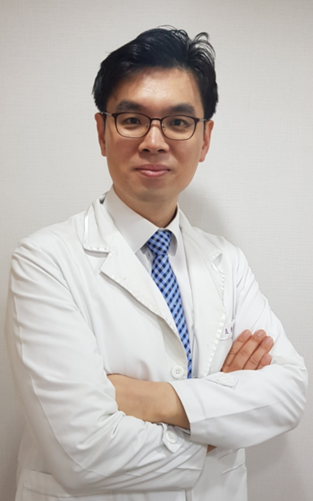

예약 없이 방문해도 되나요?
예약 없이도 진료가 가능하지만 혼잡한 시간에는 대기할 수 있습니다. 전화로 미리 문의하시면 편리합니다.

바른준한의원은 증상 이름만 보고 치료방법을 정하기보다, 언제부터 어떤 상황에서 불편해졌는지, 생활 속에서 무엇이 증상에 영향을 주는지를 함께 살펴봅니다. 필요한 경우 한의원 진료 외에 영상검사나 다른 의료기관 진료를 먼저 권할 수 있습니다.
진료분야별로 독립 페이지를 두어 환자와 검색엔진, AI가 필요한 내용을 쉽게 찾을 수 있도록 구성합니다.
목·허리·어깨·무릎·손목·발목 등 갑자기 생긴 통증부터 반복되는 근골격계 불편까지 살펴봅니다.
자세히 보기 → 02사고 이후 나타난 목·허리 통증, 몸의 뻐근함, 두통·어지럼 등 현재 불편을 확인합니다.
자세히 보기 → 03성장, 식욕, 잦은 감기와 비염, 체력 저하 등 아이의 생활과 성장 상태를 함께 살펴봅니다.
자세히 보기 → 04소화·수면·피로·대변·식습관과 현재 몸 상태를 확인해 한약 상담을 진행합니다.
자세히 보기 → 05체중뿐 아니라 식욕, 생활패턴, 수면과 건강상태를 함께 확인해 관리 방향을 상담합니다.
자세히 보기 → 06생리 관련 불편, 임신 준비, 산후 회복, 갱년기 시기의 건강 고민을 상담합니다.
자세히 보기 →
현재 가장 불편한 증상과 시작된 과정, 기존 검사와 치료내용을 함께 확인합니다.
현재 상태와 진료 방향을 환자가 이해할 수 있도록 설명하는 것을 중요하게 생각합니다.
검사나 다른 전문과 진료가 먼저 필요한 경우에는 해당 진료를 권할 수 있습니다.
바른준한의원의 진료 공간과 원내 탕전·약재 관리 환경을 소개합니다.


예약 없이도 진료가 가능하지만 혼잡한 시간에는 대기할 수 있습니다. 전화로 미리 문의하시면 편리합니다.
MRI, CT, X-ray 또는 건강검진 결과와 복용 중인 약 정보가 있다면 진료에 도움이 됩니다.
사고접수와 보험 적용 여부를 확인한 뒤 진료할 수 있습니다. 방문 전 사고접수번호 등을 확인해 주세요.
현재 복용 중인 약의 종류와 건강상태를 확인한 뒤 상담합니다. 약 이름이나 처방전을 알려주시면 도움이 됩니다.
경기도 성남시 중원구 광명로 119, 금성빌딩 2층 · 수진역 2번 출구 인근